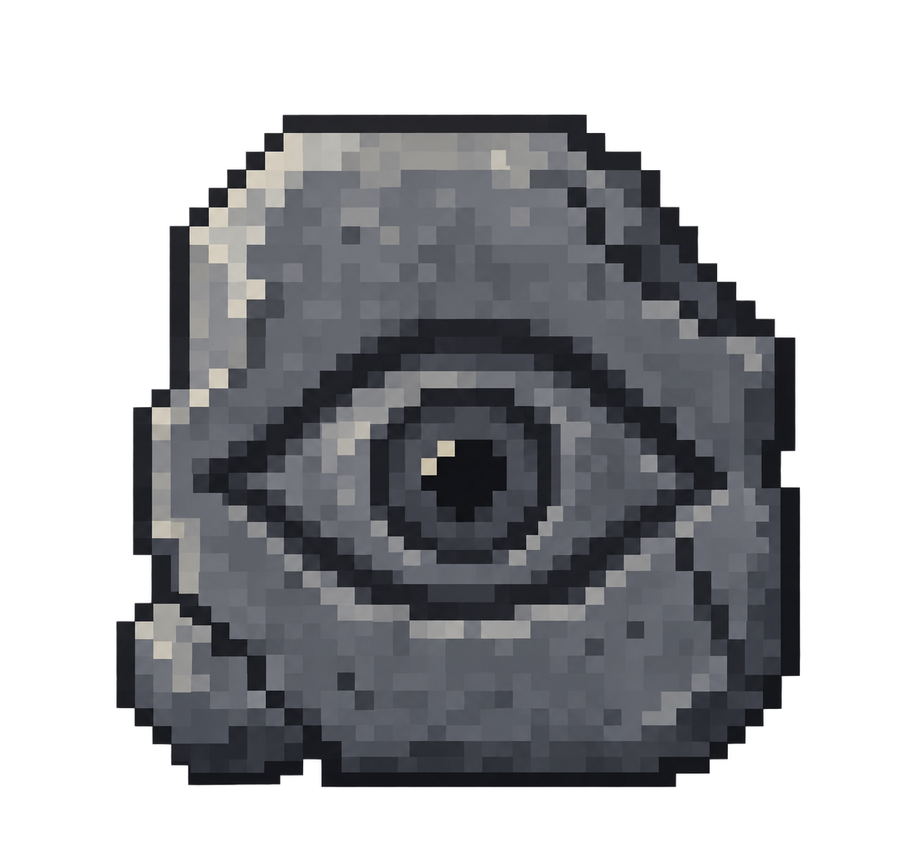
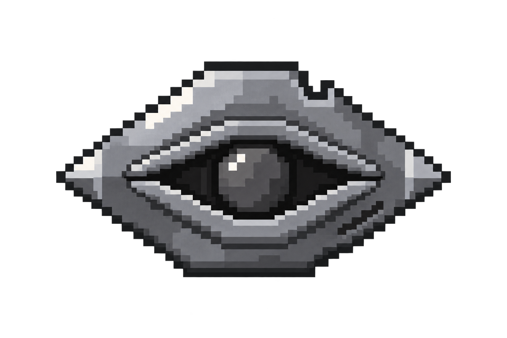
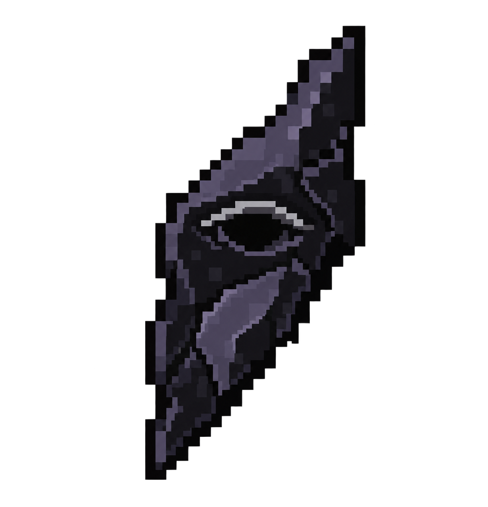
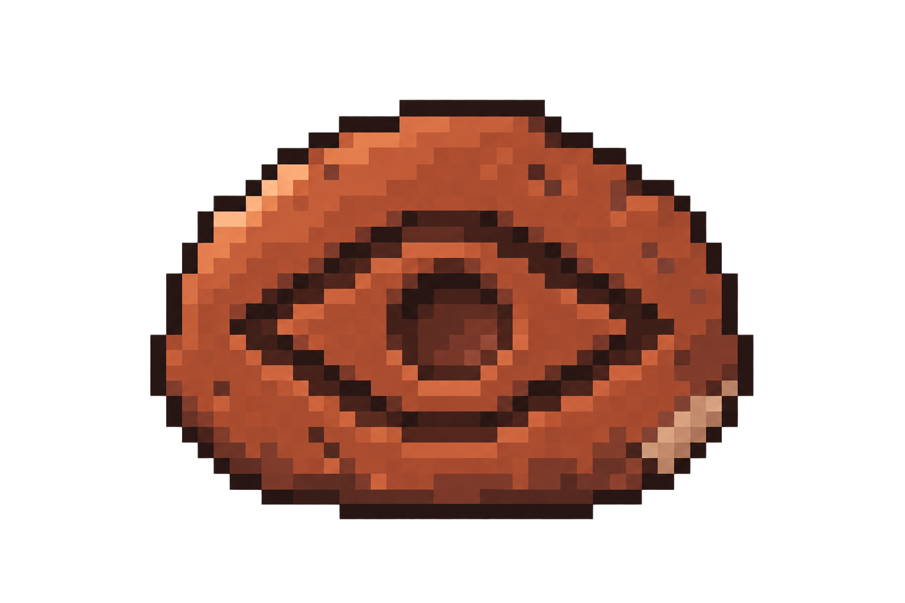
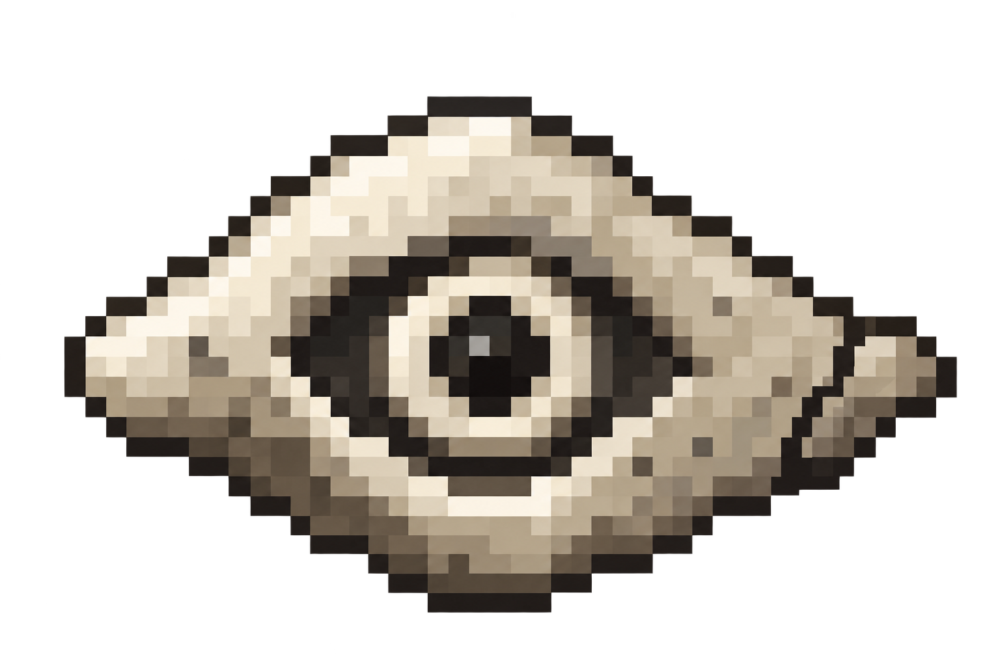
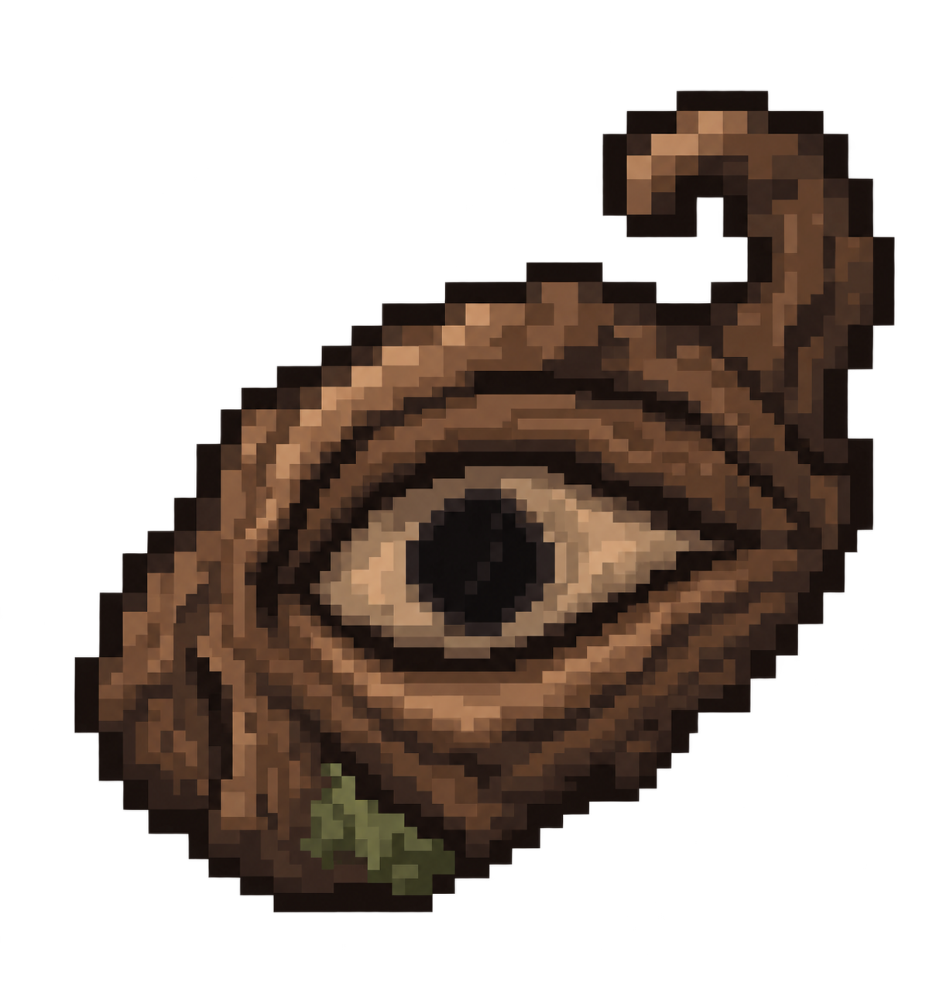
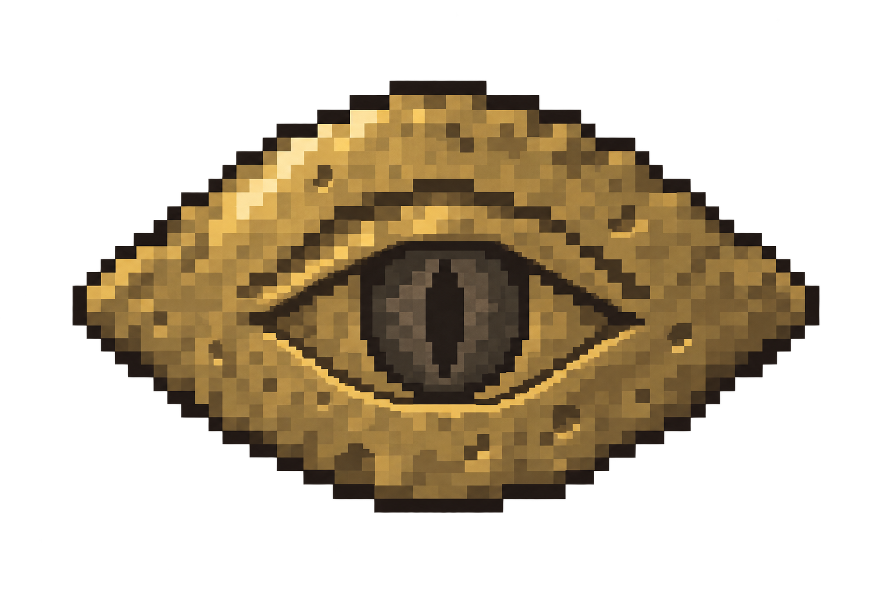
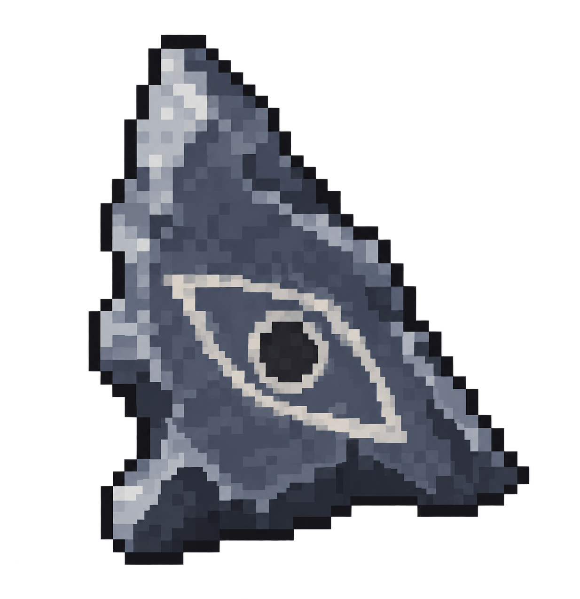

A Carved Stone
Possible fourth ingredient: Chiseled Stone Bricks
An excavated stone tablet. Quiet, weathered and closely related to the Spellstone.
Spider Eye + Ender Pearl + Attunement Shard stay central to the recipe idea. These concepts explore the finished object and a possible fourth ingredient. Choose the shape and feeling first; the ingredient can follow.

Possible fourth ingredient: Chiseled Stone Bricks
An excavated stone tablet. Quiet, weathered and closely related to the Spellstone.

Possible fourth ingredient: Iron Ingot
A forged iron plate. Strong eye silhouette with broad, readable metal edges.

Possible fourth ingredient: Obsidian
A jagged obsidian splinter. Dark, mysterious and recognisable by its long diagonal outline.

Possible fourth ingredient: Clay Ball
A stamped terracotta charm. Warm, handmade and less precious than a jewel.

Possible fourth ingredient: Bone
A carved bone token. Pale and eerie, with a hollow socket and an uneven rim.

Possible fourth ingredient: Oak Log
A twisted wooden knot. Organic, folkloric and almost grown into an eye.

Possible fourth ingredient: Gold Ingot
A hammered gold votive. A way to retain gold without building the design around a pearl.

Possible fourth ingredient: Flint
A chipped flint talisman. A rough stone fragment bearing an eye mark.